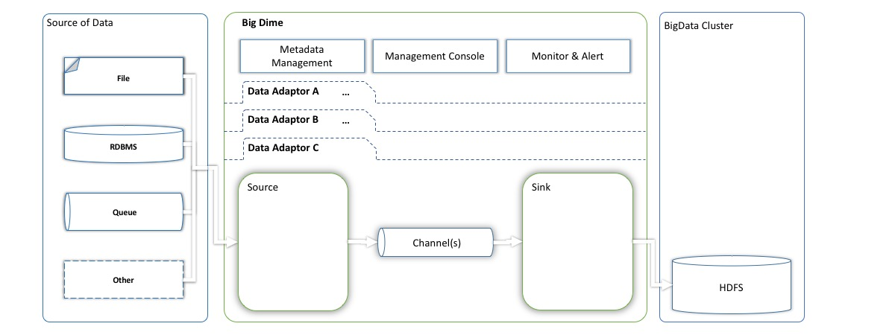

Stands for "Big Data Ingestion Made Easy" and it really means it. BigDime provides a programming and configuration model for building data adapters which can then be used to ingest large volume data sets from various data sources into Big Data (HDFS, Hive & HBase) and complements an existing Big Data ecosystems and other ingestions tools such as Flume, etc. BigDime leverages Apache Flume to build the framework's core component. BigDime is now released with few data adaptors (File & Kafka data adaptors; more adaptors in progress) to start with and ready to run right out of the box, and can be extended to add more customization for data cleansing and data standardization to be executed while data being ingested. BigDime does validate the data upon ingesting the data into Big Data and more business validation can be added. Also, comes with Metadata Management and Management Console to keep up with changes in Source data set and to alert when encountering any critical event during ingestion.
BigDime is:Data from variety of sources needs to be ingested in big data. The data ingestion system must be reliable, easy to use, highly available, configurable and extensible. These requirements are common to most of the data engineering and analytics oriented applications. There are solutions available that solve these problems but there is no ecosystem that deals with all these problems together. BigDime has been designed to solve these problems and also allows open source community to contribute as well.
BigDime emphasizes on providing end to end support for data ingestion by providing following capabilities:
The framework provides out of the box handlers using which data ingestion can be achieved by creating the BigDime adaptor configuration file. Existing Flume applications can be ported into BigDime.
Let's see what is BigDime at very high level:
